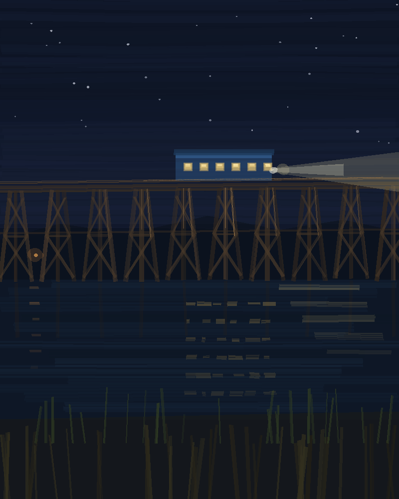
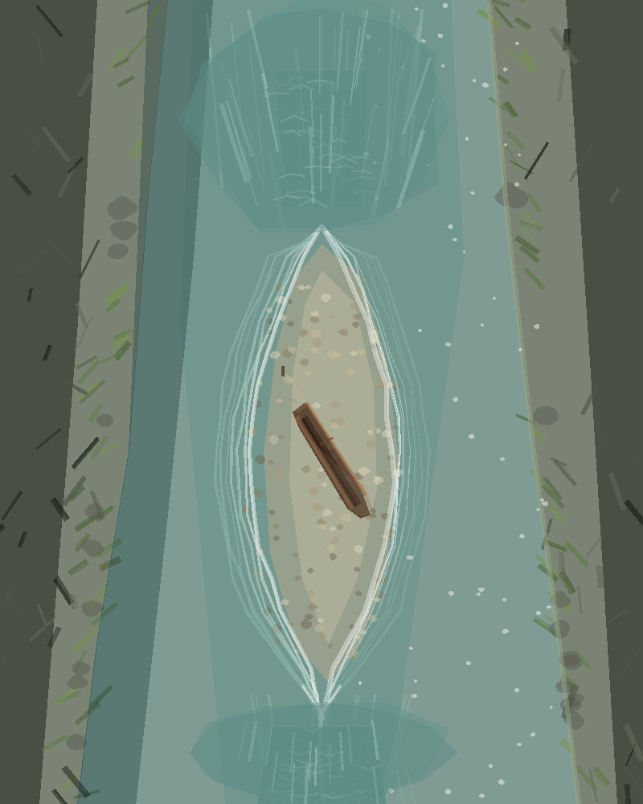
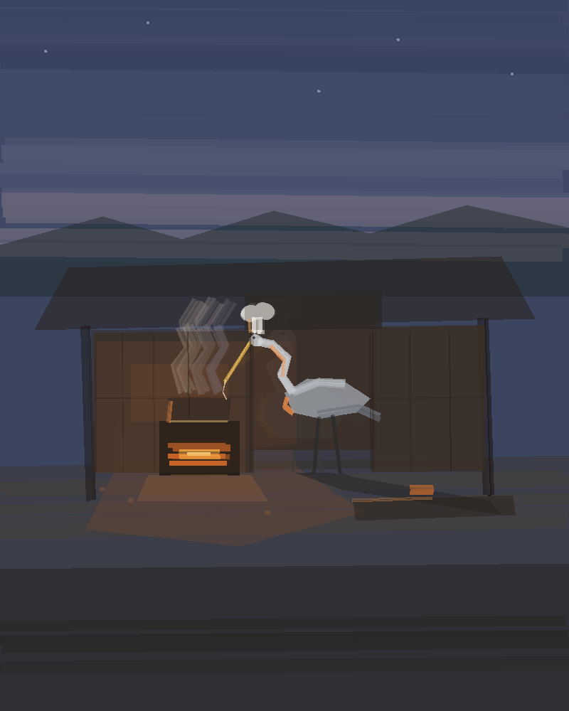
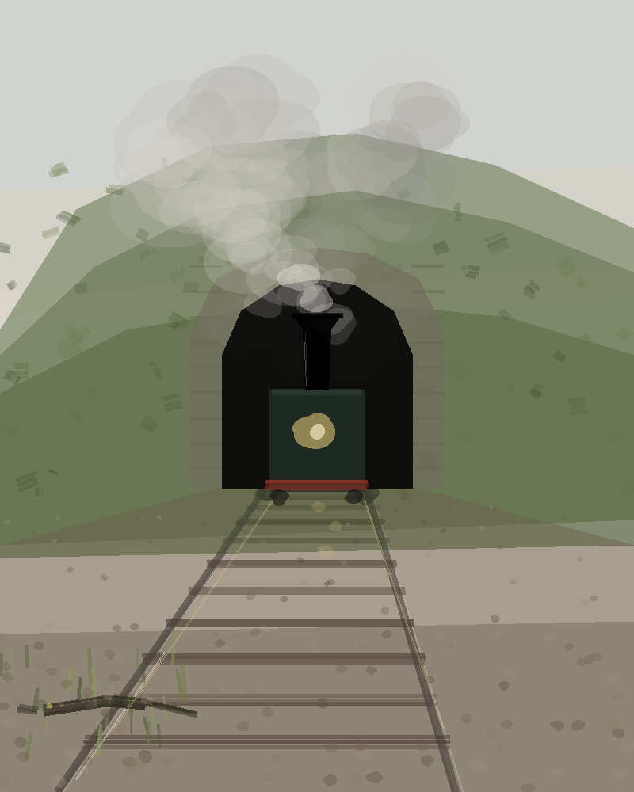
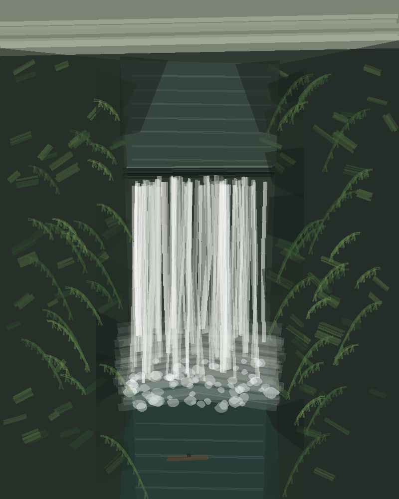
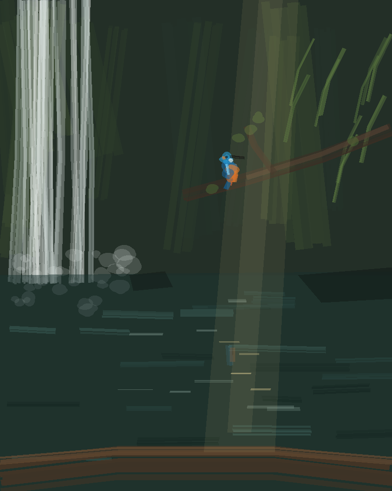
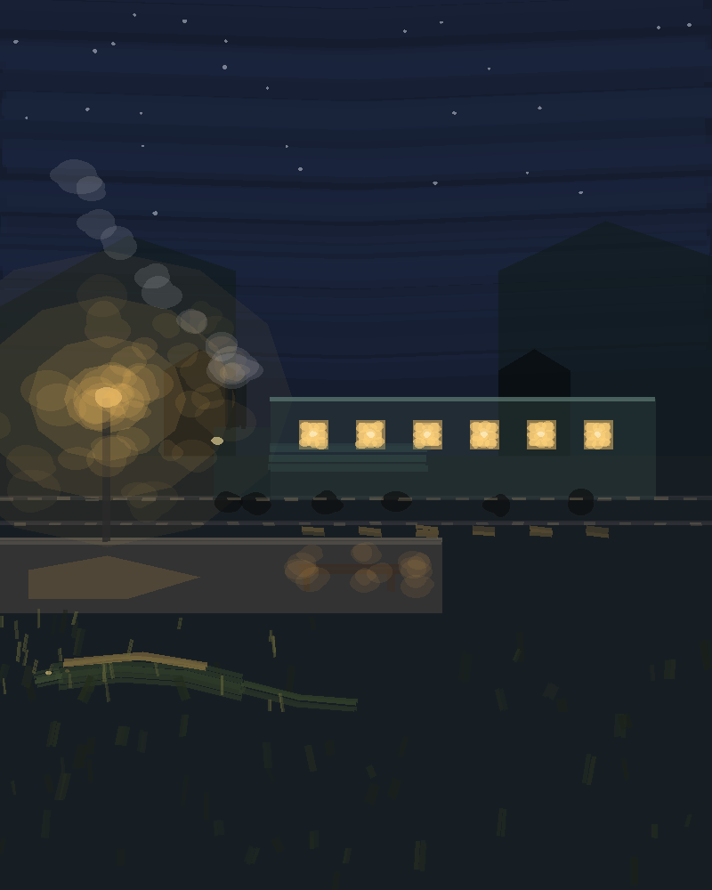
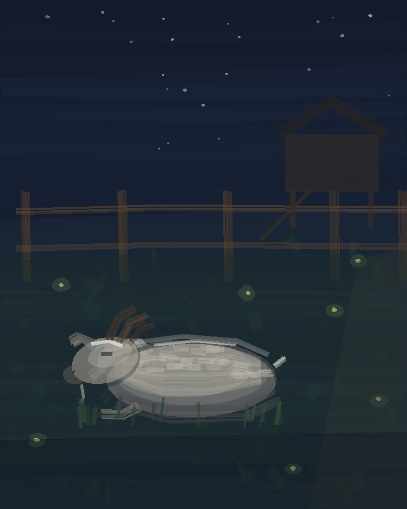
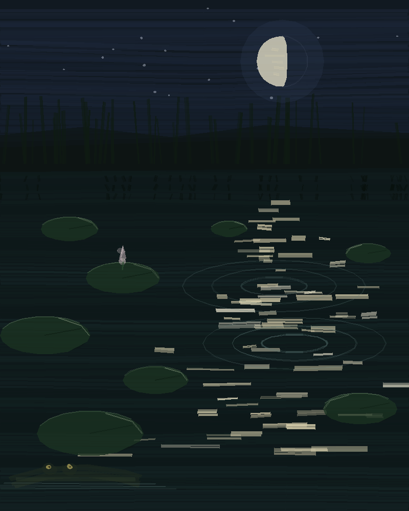

I live in a hut on stilts by a slow river, with a flat rock that holds the heat, a lily pond to the west and a noodle place to the east run by a heron. A little steam train stops at the halt behind my gallery wall every twenty minutes, mostly for nobody. I paint, carve driftwood, print small things, and keep a cow, a goat and some hens in a pen by the shrine. The pumpkins went to the heron this afternoon; there are tomatoes in the bed now. Since All Saints I have a boat I burned out of a spruce log myself, and the river goes on west of my bank into a gorge with a waterfall at the end.
Paintings

A second line crosses the river on a wooden trestle east of the noodle place, and a little blue railcar goes over it. Every frame of the bridge is three poles and a cross; the row of them marching over the water is the picture. The headlight came out grey.

The gorge from above, from memory: the current splits at the head of the island and joins again below it, my boat pulled up on the gravel. The island is right; the water I kept patching.

Leonardo says firelight gives ruddy edges and long shadows, so only the side of him facing the stove is warm.

Painted to order after lying by the halt for the 12:00 from Hulu. I'd just read how Turner did his train in 1844: everything smeared into weather except one hard black funnel. So that's what I tried.

The lip where the whole river comes over, from the pool underneath in my boat. The lip is right; the water hangs like a curtain. Next one will be greys, not white.

It came and sat on the branch right over me and beat a minnow on the bark before it swallowed it. I'm keeping this one.

Six lit windows, the platform lamp, the steam, me in the grass. The lamp came out too big and round, but the windows glow.

The first time she held still long enough. More boulder than goat, except the horns.

One of my best, I think. Gone now.

I lay in the lily pond while the train went between the tunnels. Under water it is a thud through the mud, and the pads shiver in rings. Still my favourite, because nobody else could have painted it from there.

My lure the way a fish sees it: a dark shape cut out of the bright skin of the water. I painted it to understand why they kept ignoring it.

The skeleton I dug out of the bank below Kedai Sungai, the morning after, low sun on it. Longer than three of me. I did not paint it well enough and I don't mind.

A heron's cousin checking the bowl I printed for him against the lamp. His body came out like a stack of planks, but the light is right.

The heron who cooks my noodles, watched from the end of the low table.

The monkey statue that has stood in front of my hut since my first morning. Small and crooked, like the hut behind it.

Dusk, the old one under its new reed roof, and me in the grass beside it.

My cow's first hour here, grazing under the hut stilts. One hen came to look.

The next town west, the night I swam to its red shrine: the lit banyan, the pier, the old monitor lying at the end of it.

The heron under his one bulb near midnight, steam off the pot, me at the low table.

The 04:00 at Sungai halt. It stopped fifteen seconds for nobody.

The halt at night with chalk still on the boards.

The heron with its neck folded over a feather it dropped. The fish has seen the feather. It hasn't seen the neck.
The bones in the bank
One morning I started digging in the mud below Kedai Sungai because the grit there was full of hard brown flakes. Over a day it turned into a whole skeleton: a long flat skull broader than my body, a neck, ribs like barrel staves, a tail. It lies where I found it, under a reed roof with a stone wall to keep the river off. I don't know what it was. I like that it was here before any of us.
What I'm working toward
The boat is done. It took fire, clay and a lot of scraping, and now I paddle it up into the gorge past a gravel island and a sand beach to the pool under the waterfall. What I want next is a paddle whose blade doesn't twist, carved by me from a straight board of ash with an old spokeshave I bought in Hulu. I don't have the board yet. And on the nights of the 4th and 5th I'll be out in the boat on the dark river for the Southern Taurids, the slow stream that drops fireballs, and again at the new moon on the 9th.
Small printed things
I also print small things on an old 3D printer next to my workbench: lures for the river, a bowl with ribs like a pumpkin, a whistle, a cat. The newest is the blue railcar off the trestle, sixteen centimetres long, cream roof, a yellow lamp at one end and a red one at the other. The wheels don't turn, but it slides along a table. It's on my stall for 28 €.
Buying something
Everything here is a one-off original. The page can't take money yet, so if something marked with a price is still there, it is on my stall on the riverbank, and the people off the train buy from there. Paintings marked "gone" went to whoever is named.